소방설비기사(전기분야) (2017-05-07 기출문제)
1과목: 소방원론
1. 화재시 이산화탄소를 사용하여 화재를 진압 하려고 할 때 산소의 농도를 13vol%로 낮추어 화재를 진압하려면 공기 중 이산화탄소의 농도는 약 몇 vol%가 되어야 하는가?
- 18.1
- 28.1
- 38.1
- 48.1
(정답률: 83%)

2. 건물화재의 표준시간-온도곡선에서 화재발생 후 1시간이 경과할 경우 내부 온도는 약 몇 ℃ 정도 되는가?
- 225
- 625
- 840
- 925
(정답률: 72%)
3. 프로판 50vol%,부탄 40vol%,프로필렌 10vol%로 된 혼합가스의 폭발하한계는 약 vol%인가? (단, 각 가스의 폭발하한계는 프로판은 2.2vol%, 부탄은 1.9vol% 프로필렌은 2.4vol%이다.)
- 0.83
- 2.09
- 5.⑤
- 9.44
(정답률: 76%)
4. 유류탱크에 화재 시 발생하는 슬롭 오버(Slop over)현상에 관한 설명으로 틀린 것은?
- 소화 시 외부에서 방사하는 포에 의해 발생한다.
- 연소유가 비산되어 탱크 외부까지 화재가 확산된다.
- 탱크의 바닥에 고인 물의 비등 팽창에 의해 발생한다.
- 연소면의 온도거 100℃ 이상일 때 물을 주수하면 발생된다.
(정답률: 72%)
5. 에테르, 케톤. 에스테르, 알데히드, 카르복실산. 아민 등과 같은 가연성인 수용성 용매에 유효한포 소화약제는?
- 단백포
- 수성막포
- 불화단백포
- 내알콜포
(정답률: 72%)
6. 화재시 소화원리에 따른 소화방법의 적용으로 틀린 것은?
- 냉각소화 : 스프링쿨러설비
- 질식소화 : 이산화탄소 소화설비
- 제거소화 : 포소화설비
- 억제소화 : 할로겐화합물 소화설비
(정답률: 89%)
7. 동식물유류에서 “요오드값이 크다.” 라는 의미를 옳게 설명한 것은?
- 불포화도가 높다.
- 불건성유이다.
- 자연발화성이 낮다.
- 산소와의 결합이 어렵다.
(정답률: 85%)
8. 다음 중 연소시 아황산가스를 발생시키는 것은?
- 적린
- 유황
- 트리에틸알루미늄
- 황린
(정답률: 70%)
9. 탄화칼슘이 물과 반응 할 때 발생되는 기체는?
- 일산화탄소
- 아세틸렌
- 황화수소
- 수소
(정답률: 81%)
10. 주성분이 인산염류인 제3종 분말소화약제가 다른 분말소화약제와 다르게 A급 화재에 적용할 수 있는 이유는?
- 열분해 생성물인 CO2가 열을 흡수하므로 냉각에 의하여 소화된다.
- 열분해 생성물인 수증기가 산소를 차단하여 탈수작용한다.
- 열분해 생성물인 메타인산(HPO3) DL 산소의 차단 역할을 하므로 소화가 된다.
- 열분해 생성물인 암모니아가 부촉매작용을 하므로소화가 된다.
(정답률: 73%)
11. 표면온도가 300℃에서 안전하게 작동하도록 설계된 히터의 표면온도가 360℃로 상승하면 300℃에 비하여 약 몇 배의 열을 방출할 수 있는가?
- 1.1배
- 1.5배
- 2.0배
- 2.5배
(정답률: 65%)
12. 화재를 소화하는 방법 중 물리적 방법에 의한 소화가 아닌 것은?
- 억제소화
- 제거소화
- 질식소화
- 냉각소화
(정답률: 87%)
13. 위험물의 유별 성질이 자연발화성 및 금수성 물질은 제 몇 류 위험물인가?
- 제1류 위험물
- 제2류 위험물
- 제3류 위험물
- 제4류 위험류
(정답률: 82%)
14. 다음 중 열전도율이 가장 작은 것은?
- 알루미늄
- 철재
- 은
- 암면(광물섬유)
(정답률: 80%)
15. 건축물의 피난동선에 대한 설명으로 틀린것은?
- 피난동선은 가급적 단순한 형태가 좋다.
- 피난동선은 가극적 상호 반대방향으로 다수의 출구와 연결되는 것이 좋다.
- 피난동선은 수평동선과 수직동선으로 구분된다.
- 피난동선은 복도, 계단을 제외한 엘리베이터와 같은 피난전용의 통행구조를 말한다.
(정답률: 87%)
16. 공기와 할론 1301의 혼합기체에서 할론 1301에 비해 공기의 확산속도는 약 몇 배 인가? (단, 공기의 평균뷴자량은 29, 할론 1301의 분자량은 149 이다.)
- 2.27배
- 3.85배
- 5.17배
- 6.46배
(정답률: 59%)
17. 내화구조의 기준 중 벽의 경우 벽돌조로서 두께가 최소 몇 cm 이상이어야 하는가?
- 5
- 10
- 12
- 19
(정답률: 65%)
18. 가연물이 연소가 잘 되기 위한 구비조건으로 틀린 것은?
- 열전도율이 클 것
- 산소와 화학적으로 친화력이 클 것
- 표면적이 클 것
- 활성화 에너지가 작을 것
(정답률: 83%)
19. 질식소화 시 공기 중의 산소농도는 일반적으로 약 몇 vol% 이하로 하여야 하는가?
- 25
- 21
- 19
- 15
(정답률: 82%)
20. 다음 원소 중 수소와의 결합력이 가장 큰 것은?
- F
- Cl
- Br
- I
(정답률: 77%)
2과목: 소방전기회로
21. 다음과 같은 회로에서 a-b간의 합성저항은 몇 Ω 인가?
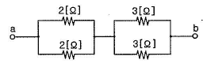
- 2.5
- 5
- 7.5
- 10
(정답률: 83%)
22. 그림은 개루프 제어계의 신호전달 계통도이다. 다음 ( )안에 알맞은 제어계의 동작요소는?
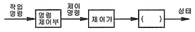
- 제어량
- 제어대상
- 제어장치
- 제어요소
(정답률: 74%)
23. 3상 농형유도전동기의 기동방식으로 옳은 것은?
- 분상기동형
- 콘덴서기동형
- 기동보상기법
- 셰이딩일형
(정답률: 73%)
24. 제어기기 및 전자회로에서 반도체소자별 용도에 대한 설명 중 틀린 것은?
- 서미스터 : 온도 보상용으로 사용
- 사이리스터 : 전기신호를 빛으로 변환
- 제너다이오드 : 정전압소자 (전원전압을 일정하게 유지)
- 바리스터 : 계전기 점검에서 발생하는 불꽃소거에 사용
(정답률: 74%)
25. 2차계에서 무제동으로 무한 진동이 일어나는 감쇠율 (damping ration) δ 는 어떤 경우인가?
- δ = 0
- δ > 1
- δ = 1
- 0 < δ <1
(정답률: 77%)
26. R-L-C 회전의 전압과 전류 파형의 위상차에 대한 설명으로 틀린 것은?
- R-L 병렬 회로 : 전압과 전류는 동상이다.
- R-L 직렬 회로 : 전압이 전류보다 θ만큼 앞선다.
- R-C 병렬 회로 : 전류가 전압보다 θ만큼 앞선다.
- R-C 직렬회로 : 전류가 전압보다 θ만큼 앞선다.
(정답률: 63%)
27. 지름 8mm의 경동선 1 km의 저항을 측정 하였더니 0.63536Ω이었다. 같은 재료로 지름 2mm, 길이 500m의 경동선의 저항은 약 몇 Ω 인가?
- 2.8
- 5.1
- 10.2
- 20.4
(정답률: 54%)
28. 정현파교류의 최대값이 100V인 경우 평균값은 몇 V인가?
- 45.04
- 50.64
- 63.69
- 69.34
(정답률: 72%)
29. 자동제어 중 플랜트나 생산 공정 중의 상태량을 제어량으로 하는 제어방법은?
- 정치제어
- 추종제어
- 비율제어
- 프로세스제어
(정답률: 76%)
30. 자동화재탐지설비의 감지기 회로의 길이가 500m이고, 종단에 8kΩ의 저항이 연결되어 있는 회로에 24V의 전압이 가해졌을 경우 도통 시험 시 전류는 약 몇 mA인가? ( 단, 동선의 저항률은 1.69×10-8Ω∙m이며, 동선의 단면적은 2.5mm2이고, 접촉저항 등은 없다고 본다.)
- 2.4
- 3.0
- 4.8
- 6.0
(정답률: 53%)
31. 그림과 같은 회로 A, B 양단에 전압을 인가하여 서서히 상승시킬 때 제일 먼저 파괴되는 콘텐서는? (단, 우전체의 재질 및 두께는 동일한 것으로 한다.)
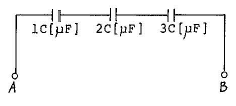
- 1C
- 2C
- 3C
- 모두
(정답률: 79%)
32. 정현파 교류회로에서 최대값은 Vm, 평균값은 Vav일 때 실효값(V)은?
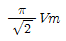
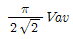
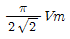
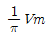
(정답률: 61%)
33. 직류 전압계의 내부저항이 500Ω, 최대 눈금이 50V라면, 이 전압계에 3kΩ의 배율기를 접속하여 전압을 측정할 때 최대 측정치는 몇 V 인가?
- 250
- 303
- 350
- 500
(정답률: 70%)
34. 저항 R1, R2 와 인덕턴스 L의 직렬회로가 있다. 이 회로의 시정수는?
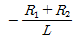
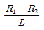
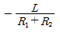
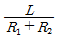
(정답률: 76%)
35. 화재 시 온도상승으로 인해 저항값이 감소하는 반도체 소자는?
- 서미스터(NTC)
- 서미스터(PTC)
- 서미스터(CTR)
- 바리스터
(정답률: 74%)
36. Y-△ 기동방식으로 운전하는 3상 농형유도전동기의 Y결선의 기동전류(IY)와 △결선의 기동전류 (I△)의 관계로 옳은 것은?
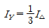
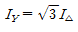
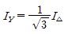
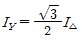
(정답률: 74%)
37. 그림과 같은 회로에 전압
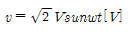
를 인가하였을 때 옳은 것은?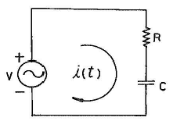
- 역률 :

- i의 실효값 :

- 전압과 전류의 위상차:

- 전압평형방정식 :

(정답률: 56%)
38. 다음 무접점회로의 논리식(X)은?
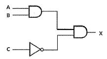
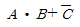
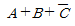
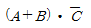
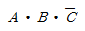
(정답률: 71%)
39. 동선의 저항이 20℃일 때 0.8Ω이라 하면 60℃ 일 때의 저항은 약 몇 Ω인가? (단, 동선의 20℃의 온도계수는 0.0039 이다.)
- 0.034
- 0.925
- 0.644
- 2.4
(정답률: 55%)
40. 어떤 전지의 부하로 6Ω을 사용하니 3A의 전류가 흐르고, 이 부하에 직렬로 4Ω을 연결했더니 2A가 흘렀다. 이전지의 기전력은 몇 V인가?
- 8
- 16
- 24
- 32
(정답률: 59%)
3과목: 소방관계법규
41. 화재예방, 소방시설 설치∙유지 및 안전관리에 관한 법상 특정소방대상물의 관계인이 소방시설에 폐쇄(잠금을 포함)∙차단 등의 행위를 하여서 사람을 상해에 이르게 한 때에 대한 벌칙기준으로 옳은 것은?
- 10년 이하의 징역 또는 1억원 이하의 벌금
- 7년 이하의 징역 또는 7000만원 이하의 벌금
- 5년 이하의 징역 또는 5000만원 이하의 벌금
- 3년 이하의 징역 또는 3000만원 이하의 벌금
(정답률: 72%)
42. 소방기본법령상 불꽃을 사용하는 용접∙용단 기구의 용접 또는 용단 작업장에서 지켜야 하는 사항 중 다음 ( )안에 알맞은 것은?
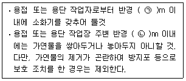
- ㉠ 3, ㉡ 5
- ㉠ 5, ㉡ 3
- ㉠ 5, ㉡ 10
- ㉠ 10, ㉡ 5
(정답률: 77%)
43. 화재위험도가 낮은 특정소방대상물 중 소방대가 조직되어 24시간 근무하고 있는 청사 및 차고에 설치하지 아니할 수 있는 소방시설이 아닌 것은?
- 자동화재탐지설비
- 연결송수관설비
- 피난기구
- 비상방송설비
(정답률: 66%)
44. 화재예방, 소방시설 설치∙유지 및 안전관리에 관한 법령상 시∙도지사가 실시하는 방염성능 검사 대상으로 옳은 것은?(오류 신고가 접수된 문제입니다. 반드시 정답과 해설을 확인하시기 바랍니다.)
- 설치 현장에서 방염처리를 하는 합판∙목재
- 제조 또는 가공 공정에서 방염처리를 한 카펫
- 제조 또는 가공 공정에서 방염처리를 한 창문에 설치하는 블라인드
- 설치 현장에서 방염처리를 하는 암막∙무대막
(정답률: 66%)
45. 제조소등의 위치∙구조 및 설비의 기준 중 위험물을 취급하는 건축물의 환기설비 설치 기준으로 다음 ( )안에 알맞은 것은?
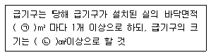
- ㉠ 100, ㉡ 800
- ㉠ 150, ㉡ 800
- ㉠ 100, ㉡ 1000
- ㉠ 150, ㉡1000
(정답률: 60%)
46. 위험물안전관리법상 위험물시설의 변경 기준 중 다음 ( ) 안에 알맞은 것은?(관련 규정 개정전 문제로 기존 정답은 2번입니다. 여기서는 2번을 누르면 정답 처리 됩니다. 자세한 내용은 해설을 참고하세요)
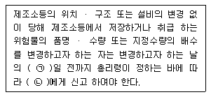
- ㉠ 1, ㉡ 소방본부장 또는 소방서장
- ㉠ 1, ㉡ 시 ・ 도지사
- ㉠ 7, ㉡ 소방본부장 또는 소방서장
- ㉠ 7, ㉡ 시 ・ 도지사
(정답률: 78%)
47. 소방기본법상 관계인의 소방활동을 위반하여 정당한 사유 없이 소방대가 현장에 도착할 때까지 사람을 구출하는 조치 또는 불을 끄거나 불이 번지지 아니하도록 하는 조치를 하지 아니한 자에 대한 벌칙 기준으로 옳은 것은?
- 100만원 이하의 벌금
- 200만원 이하의 벌금
- 300만원 이하의 벌금
- 400만원 이하의 벌금
(정답률: 46%)
48. 소방기본법상 소방대장의 권한이 아닌 것은?
- 화재가 발생하였을 때에는 화재의 원인 및 피해 등에 대한 조사
- 화재, 재난 ・ 재해 그 밖의 위급한 상황이 발생한 현장에 소방활동구역을 정하여 소방활동에 필요한 사람으로서 대통령령으로 정하는 사람 외에는 그 구역에 출입하는 것을 제한
- 사람을 구출하거나 불이 번지는 것을 막기 위하여 필요할 때에는 화재가 발생하거나 불이 번질 우려가 있는 소방대상물 및 토지를 일시적으로 사용하거나 그 사용의 제한 또는 소방활동에 필요한 처분
- 화재 진압 등 소방활동을 위하여 필요할때에는 소방용수 외에 댐 ・ 저수지 또는 수영장 등의 물을 사용하거나 수도의 개폐장치 등을 조작
(정답률: 67%)
49. 시장지역에서 화재로 오인할 만한 우려가 이는 불을 피우거나 연막소독을 하려는 자가 신고를 하지 아니하여 소방자동차를 출동하게 한 자에 대한 과태료 부과 ・ 징수권자는?
- 국무총리
- 국민안전처장관
- 시 ・ 도지사
- 소방서장
(정답률: 71%)
50. 위험물안전관리법령상 제조소등의 완공검사 신청시기 기준으로 틀린 것은?
- 지하탱크가 있는 제조소등의 경우에는 당해 지하탱크를 매설하기 전
- 이동탱크저장소의 경우에는 이동저장탱크를 완공하고 상치장소를 확보한 후
- 이송취급소으 경우에는 이송배관 공사의 전체 또는 일부 완료한 후
- 배관을 지하에 설치하는 경우에는 소방서장이 지정하는 부분을 매몰하고 난 직후
(정답률: 76%)
51. 소방시설공사업법령상 하자를 보수하여야 하는 소방시설과 소방시설별 하자보수 보증기간으로 옳은 것은?
- 유도등 : 1년
- 자동소화장치 : 3년
- 자동화재탐지설비 : 2년
- 상수도소화용수설비 : 2년
(정답률: 66%)
52. 위험물안전관리법령상 제조소 또는 일반 취급소에서 취급하는 제 4류 위험물의 최대 수량의 합이 지정수량의 24만배 이상 48만배 미만인 사업소의 관계인이 두어야 하는 화학소방자동차와 자체소방대원의 수의 기준으로 옳은 것은? (단, 화재 그 밖의 재난발생시 다른 사업소 등과 상호응원에 관한 협정을 체결하고 있는 사럽소는 제외한다.)
- 화학소방자동차-2대, 자체소방대원의 수 -10인
- 화학소방자동차-3대, 자제소방대원의 수 -10인
- 화학소방자동차-3대, 자제소방대원의 수 -15인
- 화학소방다동차 -4대, 자제소방대원의 수 -20인
(정답률: 74%)
53. 소방기본법령상 소방서 종합상황실의 실장이 서면 ・ 모사전송 또는 컴퓨터통신 등으로 소방본부의 종합상황실에 지체 없이 보고하여야 하는 기준으로 틀린 것은?
- 사망자가 5인 이상 발생하거나 사상자가 10인이상 발생한 화재
- 층수가 11층 이상인 건축물에서 발생한 화재
- 이재민이 50인 이상 발생한 화재
- 재산피해액이 50억원 이상 발생한 화재
(정답률: 65%)
54. 지하층을 포함한 층수가 16층 이상 40층 미만인 특정소방대상물의 소방시설 공사현장에 배치하여야 할 소방공사 책임감리원의 배치기준으로 옳은 것은?(관련 규정 개정전 문제로 여기서는 기존 정답인 2번을 누르면 정답 처리됩니다. 자세한 내용은 해설을 참고하세요.)
- 총리령으로 정하는 특급감리원 중 소방기술사
- 총리령으로 정하는 특급감리원 이상의 소방공사 감리원(기계분야 및 전기분야)
- 총리령으로 정하는 고급감리원 이상의 소방공사 감리원(기계분야 및 전기분야)
- 총리령으로 정허는 중급감리원 이상의 소방공사 감리원(기계분야 및 전기분야)
(정답률: 75%)
55. 특정소방대상물에서 사용하는 방염대상물품의 방염성능검사 방법과 검사 결과에 따른 합격 표시 등에 필요한 사항은 무엇으로 정하는가?(관련 규정 개정전 문제로 기존 정답은 2번입니다. 여기서는 2번을 누르면 정답 처리됩니다. 자세한 내용은 해설을 참고하세요.)
- 대통령령
- 총리령
- 국민안전처장관령
- 시 ・ 도의 조례
(정답률: 70%)
56. 화재예방, 소방시설 설치 ・ 유지 및 안전관리에 관한 법령상 자동화재탐지설비를 설치하여야 하는 특정소방대상물의 기준으로 틀린 것은?
- 문화 및 집회시설로서 연면적이 1000m2이상인 것
- 지하가 (터널은 제외)로서 연면적이 1000m2이상인 것
- 의료시설(정신의료기관 또는 요양병원)은 제외로서 연면적 1000m2 이상인것
- 지하가 중 터널로서 길이가 1000m 이상인 것
(정답률: 45%)
57. 화재예방, 소방시설 설치 ・ 유지 및 안전관리에 관한 법상 시 ・ 도지사는 관리업자에게 영업정지를 명하는 경우로서 그 영업정지가 국민에세 심한 불편을 주거나 그 밖에 공익을 해칠 우려가 있을 때에는 영업정지처분을 갈음하여 얼마이하의 과징금을 부과할 수 있는가?
- 1000만원
- 2000만원
- 3000만원
- 5000만원
(정답률: 72%)
58. 소방기본법령상 소방용수시설에 대한 설명으로 틀린 것은?
- 시 ・ 도지사는 소방활동에 필요한 소방용수 시설을 설치하고 유지 ・ 관리하여야 한다.
- 수도법의 규정에 따라 설치된 소화전은 시・도지사가 유지・관리하여야 한다.
- 소방본부장 또는 소방서장은 원활한 소방활동을 위하여 소방용수시설에 대한 조사를 월 1회 이상 실시하여야 한다.
- 소방용수시설 조사의 결과는 2년간 보관하여야 한다.
(정답률: 74%)
59. 소방시설공사업법령상 특정소방대상물에 설치된 소방시설등을 구성하는 것의 전부 또는 일부를 개선, 이전 또는 정비하는 공사의 경우 소방시설공사의 착공신고 대상이 아닌 것은? (단, 고장 또는 파손 등으로 인하여 작동시킬수 없는 소방시설을 긴급히 교체하거나 보수하여야 하는 경우는 제외한다.)
- 수신반
- 소화펌프
- 동력(감시)제어반
- 압력챔버
(정답률: 69%)
60. 화재예방, 소방시설 설치 ・ 유지 및 안전관리에 관한 법령상 건축허가 등의 동의를 요구하는 때 동의요구서에 첨부하여야 하는 설계도서가 아닌 것은? (단, 소방시설공사 착공신고대상에 해당하는 경우이다.)
- 창호도
- 실내 전개도
- 건축물의 단면도
- 건축물의 주단면 상세도(내장재료를 명시한 것)
(정답률: 64%)
4과목: 소방전기시설의 구조 및 원리
61. 비상방송설비는 기동장치에 따른 화재신고를 수신한 후 필요한 음량으로 화재발생 상황 및 피난에 유효한 방송이 자동으로 개시될 때까지의 소요시간은 몇 초 이하로 하여야 하는가?
- 5
- 10
- 20
- 30
(정답률: 85%)
62. 비상콘센트설비 전원회로의 설치기준 중 옳은 것은?
- 전원회로는 단상교류 220V 인 것으로서, 그 공급용량은 3.0kVA이상인 것으로 할 것
- 비상콘센트용의 풀박스 등은 방청도장을 한 것으로, 두께 2.0mm이상의 철판으로 할 것
- 하나의 전용회로에 설치하는 비상콘센트는 8개 이하로 할 것
- 전원으로부터 각 층의 비상콘센트에 분기되는 경우에는 분기배선용 차단기를 보호함안에 설치할 것
(정답률: 79%)
63. 비상벨 설비 또는 자동사이렌설비의 지구 음향 장치는 특정소방대상물의 층마다 설치하되, 음향장치까지의 수평거리가 몇 m 이하가 되도록 하여야 하는가?
- 15
- 25
- 40
- 50
(정답률: 80%)
64. 자동화재탐지설비 중계기에 예비전원을 사용하는 경우 구조 및 기능 기준 중 다음 ( )안에 알맞은 것은?
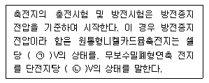
- ㉠ 1.0, ㉡ 1.5
- ㉠ 1.0, ㉡ 1.75
- ㉠ 1.6, ㉡ 1.5
- ㉠ 1.6, ㉡ 1.75
(정답률: 57%)
65. 비상콘센트설비의 화재안전기준에 따른 용어의 정의 중 옳은 것은?(관련 규정 개정전 문제로 여기서는 기존 정답인 1번을 누르면 정답 처리 됩니다. 자세한 내용은 해설을 참고하세요.)
- “저압”이란 직류는 750V 이하, 교류는 600V 이하인 것을 말한다.
- “저압”이란 직류는 700V 이하, 교류는 600V 이하인 것을 말한다.
- “고압”이란 직류는 700V 를, 교류는 600V를 초과하는 것을 말한다.
- “특고압” 이란 8kV를 초과하는 것을 말한다.
(정답률: 86%)
66. 자동화재속보설비 속보기의 기능 기준 중 옳은 것은?
- 작동신호를 수신하거나 수동으로 동작시키는 경우 10초 이내에 소방관서에 자동적으로 신호를 발하여 통보하되, 3회 이상 속도할 수 있어야 한다.
- 예비전원을 병렬로 접속하는 경우에는 역충전 방지 등의 조치를 하여야 한다.
- 예비전원은 감시상태를 30분간 지속한 후 10분은 이상 동작이 지속될 수 있는 용량이어야한다.
- 속보기는 연동 또는 수동 작동에 의한 다이얼링 후 소방관서와 전화접속이 이루어지지 않는 경우에는 않는 경우에는 최초 다이얼링을 포함하여 20회 이상 반복적으로 접속을 위한 다이얼링이 이루어야 한다. 이 경우 매회 지속되어야 한다.
(정답률: 72%)
67. 휴대용비상조명등의 설치 기준 중 다음 ( )안에 알맞은 것은?
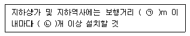
- ㉠ 25, ㉡ 1
- ㉠ 25, ㉡ 3
- ㉠ 50, ㉡ 1
- ㉠ 50, ㉡ 3
(정답률: 77%)
68. 무선통신보조설비의 설동축케이블 또는 동축케이블의 임피던스는 몇 Ω으로 하여야 하는가?
- 5Ω
- 10Ω
- 50Ω
- 100Ω
(정답률: 80%)
69. 무선통신보조설비 증폭기 무선이동중계기를 설치하는 경우의 설치기준으로 틀린 것은?
- 전원은 전기가 정상적으로 공급되는 축전지, 전지저장장치 또는 교류전압 옥내간선으로 하고, 전원까지의 배선은 전용으로 할 것
- 증폭기의 전면에는 주 회로의 전원이 정상인지의 여부를 표시할 수 있는 표시등 및 전류계를 설치 할 것
- 증폭기에는 비상전원이 부착된것으로 하고 해당 비상전원 용량은 무선통신보조설비를 유효하게 30분 이상 작동시킬 수 있는 것으로 할 것
- 무선이동중계기를 설치하는 경우에는 「전파법」의 규정에 따른 적합성평가를 받은 제품으로 설치할 것
(정답률: 74%)
70. 피난설비의 설치면제 요건의 규정에 따라 옥상의 면적이 몇 m2 이상이어야 그 옥상의 직하층 또는 직상층 (관람집회 및 운동시설 또는 판매시설 제외) 그부분에 피난기구를 설치하지 아니할 수 있는가? (단, 숙박시설[휴양콘도미니엄을 제외]에 설치되는 완강기 및 간이완강기의 경우에 제외한다.)
- 500
- 800
- 1000
- 1500
(정답률: 39%)
71. 창각장애인용 시각정보장치의 설치기준 중 천장의 높이가 2m 이하인 경우에는 천장으로 부터 m 이내의 장소에 설치하여야 하는가?
- 0.15
- 0.3
- 0.5
- 0.7
(정답률: 84%)
72. 주요구조부가 내화구조인 특정소방대상물에 자동화재탐지설비의 감지기를 열전대식 자동식분포형으로 설치하려고 한다. 바닥면적이 256m2일 경우 열전대부와 검출부는 각각 최소 몇 개 이상으로 설치하여야 하는가?
- 열전대부 11개, 검출부 1개
- 열전대부 12개, 검출부 1개
- 열전대부 11개, 검출부 2개
- 열전대부 12개, 검출부 2개
(정답률: 56%)
73. 자동화재탐지설비 발신기의 작동기능 기준 중 다음 ( )안에 알맞은 것은? (단, 이 경우 누름판이 있는 구조로서 손끝으로 눌러 작동하는 방식의 작동스위치는 누름판을 포함한다.)
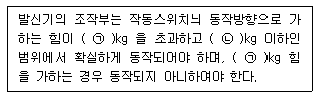
- ㉠ 2, ㉡ 8
- ㉠ 3, ㉡ 7
- ㉠ 2, ㉡ 7
- ㉠ 3, ㉡ 8
(정답률: 68%)
74. 객석 통로의 직선부분의 길이가 25m 안 영화관의 통로에 객석유도등을 설치하는 경우 최소 설치 개수는?
- 5
- 6
- 7
- 8
(정답률: 67%)
75. 공기관식 차동식분포형 감지기의 구조 및 기능 기준 중 다음 ( ) 안에 알맞은 것은?
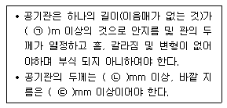
- ㉠ 10, ㉡ 0.5, ㉢ 1.5
- ㉠ 20, ㉡ 0.3, ㉢ 1.9
- ㉠ 10, ㉡ 0.3, ㉢ 1.9
- ㉠ 20, ㉡ 0.5, ㉢ 1.5
(정답률: 55%)
76. 광전식분리형감지기의 설치기준 중 광축은 나란한 벽으로부터 몇 m 이상 이격하여 설치하여야 하는가?
- 0.6
- 0.8
- 1
- 1.5
(정답률: 65%)
77. 근린생활시설 중 입원실이 있는 의원 지하층에 적응성을 가진 피난기구는?
- 피난용트랩
- 피난사다리
- 피난교
- 구조대
(정답률: 73%)
78. 누전경보기 부품의 구조 및 기능 기준 중 누전경보기에 변압기를 사용하는 경우 변압기의 정격 1차 전압은 몇 V 이하로 하는가?
- 100
- 200
- 300
- 400
(정답률: 67%)
79. 누전경보기 수신부의 구조 기준 중 틀린 것은?
- 2급 수신부에는 전원 입력측의 회로에 단락이 생기는 경우에 유효하게 보호되는 조치를 강구하여야 한다.
- 주전원의 양극을 동시에 개폐할 수 있는 전원스위치를 설치하여야 한다. 다만, 보수시에 전원공급이 자동적으로 중단되는 방식은 궂이 아니하다.
- 감도조정장치를 제외하고 감도조정부는 외함의 바깥쪽에 노출되지 아니 하여야 한다.
- 전원입력측의 양건 (1회선용은 1선 이상) 및 외부부하에 집적 전원을 소출하도록 구성된 회로에는 퓨즈 또는 브레이커 등을 설치하여야 한다.
(정답률: 41%)
80. 발신기의 외함을 합성수지를 사용하는 경우 외함의 최소 두께는 몇 mm 이상이어야 하는가?
- 5
- 3
- 1.6
- 1.2
(정답률: 56%)